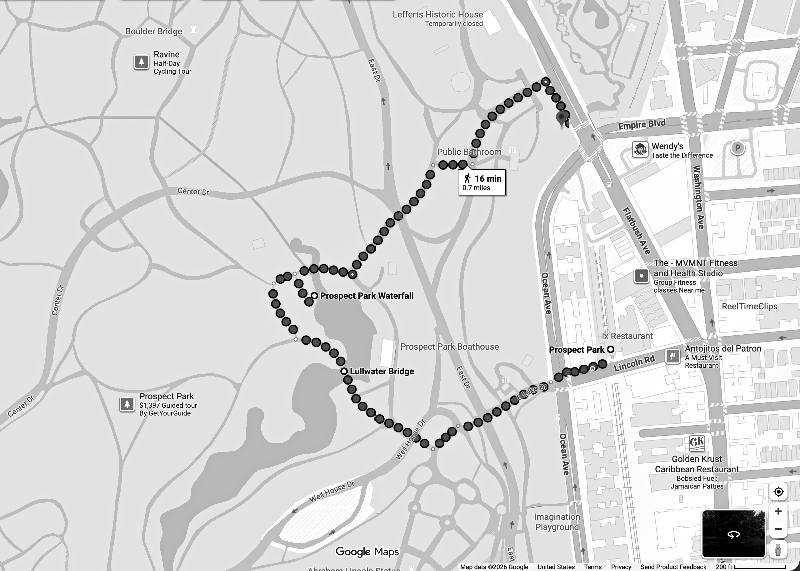

1
Spot 1 — Park Entrance
At the entrance to the park, the most immediately noticeable sound was the crunch of footsteps on snow.
2
Spot 2 — Wooded Path
Along the wooded path, wind brushing against branches produced brief, intermittent sounds.
3
Spot 3 — Bridge Crossing
On the bridge, the sound of water rising from below filled the space more prominently than footsteps.
4
Spot 4 — Waterfall Area
Near the waterfall, a single sound occupied the entire space. The steady rhythm of falling water overwhelmed other sounds.
5
Spot 5 — Tunnel Passage
Inside the tunnel, wind noise intensified and revealed the form of the space.